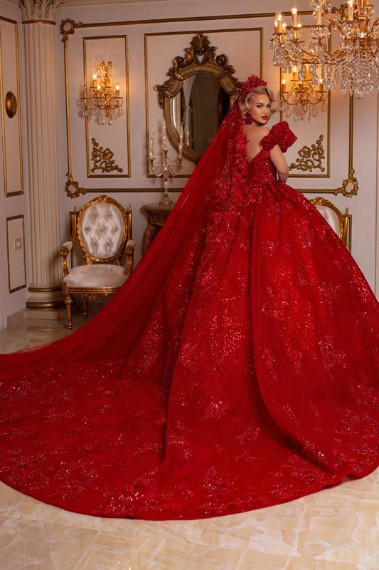
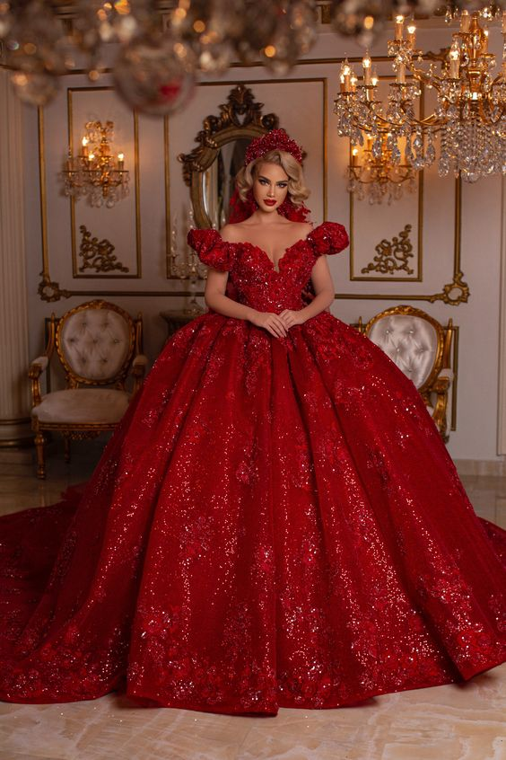
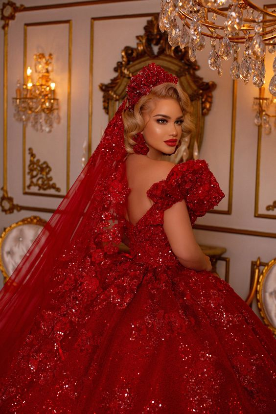
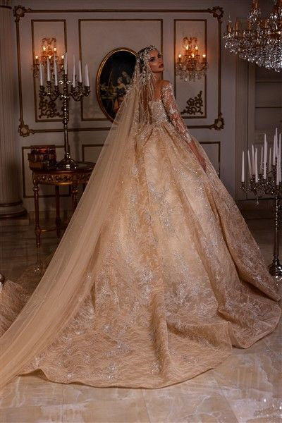
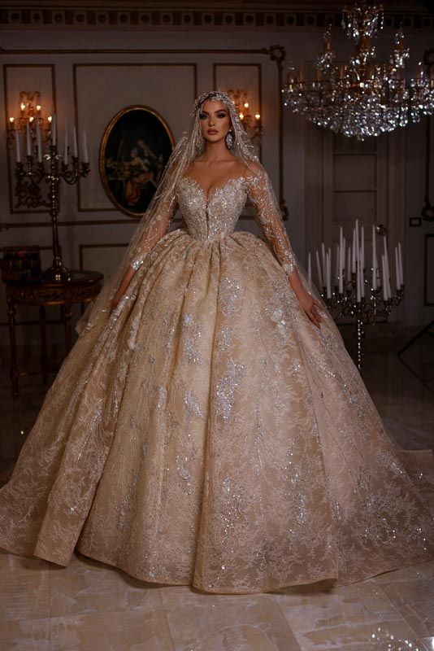
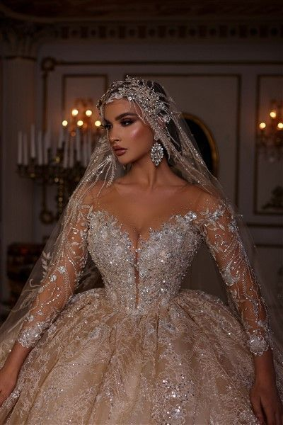

-The color, style and ceremonial importance of the gown can depend on the religion and culture of the wedding participants. In Western cultures and Anglo-Saxon cultural spheres, the wedding dress is most commonly white, a fashion made popular by Queen Victoria when she married in 1840.
  -Weddings performed during and immediately following the Middle Ages were often more than just a union between two people. They could be a union between two families, two businesses or even two countries. Many weddings were more a matter of politics than love, particularly among the nobility. Brides were therefore expected to dress.
  -The first documented instance of a princess who wore a white wedding dress for a royal wedding ceremony is that of Philippa of England, who wore a tunic with a cloak in white silk bordered with squirrel and ermine in 1406, when she married Eric of Pomerania.This was not a widespread trend, however: prior to the Victorian era.